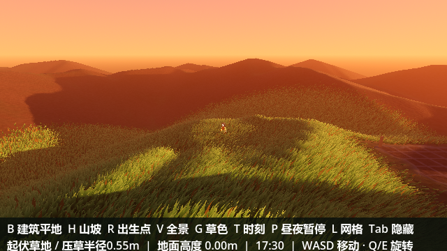
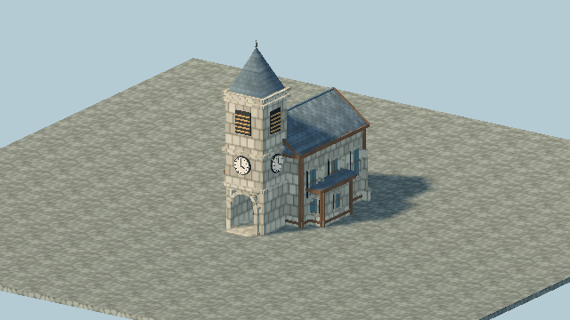

06:30 / 清晨
001 / GAME DEVELOPMENT
Survival25D
一场关于生存与信任的实验。
六个人，一座孤岛，一艘名额有限的渡船。
环境迫使人们合作，未知让信任变得脆弱。
以 2.5D 场景探索人与环境的关系，让光影、空间和信息成为故事的一部分。
开发中 / 项目代号，非正式游戏名称

关于世界的构筑，
也关于人与世界的关系。
一场关于生存与信任的实验。
六个人，一座孤岛，一艘名额有限的渡船。
环境迫使人们合作，未知让信任变得脆弱。
以 2.5D 场景探索人与环境的关系，让光影、空间和信息成为故事的一部分。
开发中 / 项目代号，非正式游戏名称

建筑原型 / 场景构成 / 像素材质

八向角色 / 帧动画 / 交互表达
在设计与技术的交界处，
探索想法成为现实的可能。
关注游戏设计、场景构筑与交互体验。从规则到画面，从概念到原型，尝试把每个细节连接成完整的体验。